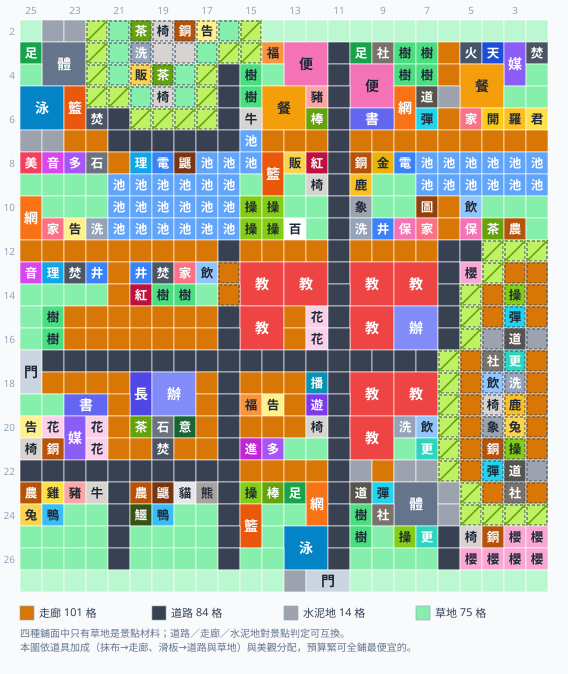

口袋學院物語2 佈局範例集
下面的擺法都可以點「在模擬器開啟」直接載入本站的佈局模擬器，照著擺或自由修改。最上面那張是健康鎮完美佈局——一張圖同時成立全部 29 個人氣景點，而且每一棟都走得到。
健康鎮完美佈局：29 個人氣景點全成立
這張圖以遊戲第一個地區「健康鎮」的原始地形為底——水塘、東西兩塊高地、原本的樹林與校舍全部保留——在上面規劃出一套完整的校園。它不是把設施硬塞在一起的示意圖，而是把全部 29 個人氣景點同時湊齊，同時交代清楚一所學校真正需要的東西：三個年級各 3 間、共 9 間教室、2 間辦公室、從校門串起來的完整路網動線，以及沒有景點效果的農牧與生活設施。

圖中每格上的字是設施簡稱（操＝操場、樹＝樹林、走＝走廊…）。灰色是高地，帶斜線的黃綠色是斜坡（高低差自動形成的地形）。邊緣數字是遊戲內座標，上方為 Y、左側為 X，與模擬器一致。
設計原則：為什麼長這樣
- 棋盤式路網。橫向大道走在 X7 / X12 / X17 / X22，縱向街道走在 Y21 / Y16 / Y11 / Y6，全部從校門串起來。這是動線的骨架——只要每棟至少有一面貼到路，學生就走得到。
- 街廓剛好 4×4。路與路之間圍出的方塊正好是一個 4×4，也就是景點判定的窗口大小。所以「同一個街廓裡的設施」＝「有機會湊成同一個景點」，規劃時只要顧好一個街廓就好。
- 外圈蓋房、中庭留綠。每個街廓外圈 12 格蓋設施（都貼路），中間 4 格放草地或花壇。中庭不但好看，草地本身還是「菜園」「力量」「清爽」等景點的材料。
- 教室依年級分棟。學校要收三個年級的學生，教室不是蓋一間就好。圖上規劃了三棟教學樓、每棟 3 間教室，共 9 間：1 年級棟與 2 年級棟在東側（各附一間辦公室或生活設施），3 年級棟利用健康鎮原本就有的那間舊校舍再擴建 2 間。辦公室 2 間——原有的那間留在校門旁的行政區，新的一間設在 1 年級棟。
- 一個街廓剛好 4 棟大型建築。2×2 的教室、辦公室、餐廳、便利商店都對齊街廓的四個象限，一個 4×4 街廓正好排下 4 棟，而且每棟都有一面貼到外圈的路。這是「大型建築要怎麼排才不會把自己圍死」的標準解。
- 校長室只有一間，位置要挑。校長室被刻意蓋在辦公室旁邊，讓「選舉」（校長室＋辦公室＋茶室）和「學習」（校長室＋圖書室＋多媒體教室）共用同一間，省下一整組設施。
- 地形照用不改。水塘留著給「水岸」，東側高地邊緣天然形成的斜坡留著給「黃昏」。斜坡在遊戲裡不是設施、蓋不出來，只能靠高低差生出來，所以高地一定要留。
五大分區
- 北區（X3–X6）設施密度最高的一區，16 個景點集中在這裡：怪談、藝術、購物、特盛、時尚、埋伏、清爽、生物、吃醋、澀谷、熱血、動作、青空、非洲、宇宙、開羅。景點會擠在一起是刻意的——設施可以被多個景點共用，越密集越省。
- 池畔區（X8–X11）圍著原有水塘展開，9 個景點：運動、好友、家庭、菜園、力量、熱情、水岸、燒水、名門。水塘本身就是「水岸」的材料，不用動它。
- 中央區（X13–X16）主要幹道的轉運點，成立「約會」。3 年級棟在這裡（X13–X16 / Y12–Y15）：健康鎮原本的舊校舍加蓋 2 間，湊成 3 間教室。1 年級棟在它東邊（X13–X16 / Y7–Y10），3 間教室＋1 間辦公室。
- 校門區（X17–X21）校門、原有辦公室、校長室所在的行政區，成立「學習」與「選舉」。2 年級棟在東側（X18–X21 / Y7–Y10），3 間教室＋洗手間、飲水處、更衣室等生活設施。
- 南區（X23–X26）新開發區：西半邊是農牧園區（小農場、養雞、養豬、養牛、養兔、飼鴨與各種飼育小屋），東半邊是運動園區（體育館、道場、游泳池、棒球場等），靠著東側高地的斜坡成立「黃昏」。
29 個景點的成立位置
座標是該景點 4×4 判定範圍的左上角，用遊戲內的顯示方式（X 由上而下、Y 由左而右）。在模擬器裡把滑鼠移到格子上就會顯示座標，可以直接對照。
| 景點 | 座標 | 需要設施 | 屬性加成 |
|---|---|---|---|
| 運動 | X7 / Y16 | 操場＋籃球場＋販賣機 | 體育+3 頭腦+3 態度+2 |
| 約會 | X12 / Y25 | 網球場＋樹林／櫻花樹＋圖書室 | 文系+2 理系+3 人氣+2 態度+2 |
| 好友 | X7 / Y10 | 飲水處＋保健室＋茶室 | 文系+3 運動+2 人氣+2 |
| 怪談 | X3 / Y5 | 音樂室＋理科室＋焚化爐 | 理系+3 頭腦+3 |
| 學習 | X17 / Y23 | 校長室＋圖書室＋多媒體教室 | 文系+3 理系+3 態度+3 |
| 藝術 | X2 / Y6 | 美術室＋音樂室＋多功能室 | 理系+3 運動+3 |
| 家庭 | X8 / Y11 | 保健室＋家政室＋洗手間 | 文系+2 體育+2 人氣+3 |
| 購物 | X2 / Y25 | 福利社＋便利商店＋餐廳 | 體育+3 運動+3 態度+1 |
| 特盛 | X3 / Y25 | 養豬小屋＋養牛小屋＋餐廳 | 體育+5 頭腦+4 |
| 菜園 | X8 / Y13 | 草地＋小農場＋飲水處 | 理系+2 運動+2 人氣+2 態度+2 |
| 黃昏 | X23 / Y8 | 樹林／櫻花樹＋斜坡＋棒球場 | 文系+3 體育+3 人氣+3 態度+3 |
| 力量 | X11 / Y22 | 水井＋樹林／櫻花樹＋草地 | 文系+3 體育+3 頭腦+2 態度+2 |
| 時尚 | X3 / Y10 | 網球場＋美術室＋家政室 | 文系+3 理系+3 人氣+2 態度+2 |
| 熱情 | X8 / Y8 | 足球場＋籃球場＋焚化爐 | 理系+3 體育+3 人氣+2 態度+2 |
| 埋伏 | X5 / Y25 | 公告欄＋巨石＋洗手間 | 文系+3 體育+1 頭腦+2 人氣+2 |
| 清爽 | X6 / Y15 | 映山紅＋草地＋長椅 | 文系+3 理系+3 人氣+2 態度+2 |
| 水岸 | X8 / Y25 | 水塘＋洗手間＋水井 | 文系+2 理系+3 頭腦+2 |
| 生物 | X2 / Y5 | 理科室＋電腦室＋飼育鼴鼠 | 理系+3 頭腦+2 運動+2 人氣+2 |
| 燒水 | X8 / Y10 | 焚化爐＋家政室＋飲水處 | 文系+1 理系+1 人氣+1 態度+1 |
| 選舉 | X17 / Y22 | 校長室＋辦公室＋茶室 | 理系+2 體育+3 運動+2 人氣+2 |
| 吃醋 | X2 / Y12 | 焚化爐＋餐廳＋家政室 | 理系+3 體育+2 頭腦+2 態度+2 |
| 澀谷 | X2 / Y16 | 足球場＋社團教室＋便利商店 | 文系+3 體育+1 人氣+2 |
| 熱血 | X3 / Y6 | 足球場＋體育館＋游泳池 | 文系+2 理系+3 頭腦+3 運動+3 |
| 動作 | X3 / Y15 | 道場＋社團教室＋彈跳床 | 體育+3 頭腦+2 運動+2 |
| 名門 | X8 / Y25 | 銅像＋金像＋電腦室 | 文系+3 體育+3 人氣+3 態度+3 |
| 青空 | X5 / Y11 | 飼育長頸鹿＋銅像＋圖騰柱 | 文系+3 頭腦+2 人氣+2 |
| 非洲 | X5 / Y21 | 飼育長頸鹿＋飼育大象＋圖騰柱 | 文系+5 理系+3 態度+2 |
| 宇宙 | X3 / Y15 | 宇宙火箭＋天象館＋多媒體教室 | 理系+3 頭腦+2 人氣+2 |
| 開羅 | X3 / Y10 | 金開羅君＋開羅君像＋開羅君房間 | 文系+5 理系+5 人氣+3 態度+3 |
29 個景點全開時的屬性加成合計為：文系 +49、理系 +49、人氣 +37、體育 +35、態度 +32、頭腦 +29、運動 +19。
用到的設施清單
沒有標數字的表示只蓋一棟。有些設施會重複出現（例如焚化爐 ×5、操場 ×6），是因為它們被好幾個相隔很遠的景點各自需要；如果想省錢，可以把那些景點集中到同一區再共用。
| 分類 | 設施 |
|---|---|
| 生活與設施 | 便利商店 ×2、保健室、公告欄 ×3、圖騰柱 ×2、宇宙火箭、廣播室、更衣室 ×2、水井 ×3、洗手間 ×3、焚化爐 ×5、百葉箱、福利社 ×2、茶室 ×2、販賣機、遊戲區、金像、金開羅君、銅像 ×4、長椅 ×4、開羅君像、飲水處 ×2、餐廳 ×2 |
| 教室與專科 | 圖書室 ×2、多功能室 ×2、多媒體教室 ×2、天象館、家政室 ×2、教室 ×9、校長室、校門(左右用)、理科室、美術室 ×2、辦公室 ×2、進路室、開羅君房間、電腦室 ×2、音樂室 |
| 運動與社團 | 彈跳床 ×2、操場 ×6、棒球場 ×2、游泳池 ×2、社團教室 ×2、籃球場 ×3、網球場 ×3、足球場 ×4、道場 ×2、體育館 ×2 |
| 動植物農牧 | 小農場 ×3、飼育大象、飼育無尾熊、飼育熊貓、飼育長頸鹿 ×2、飼育鱷魚、飼育鼴鼠 ×2、飼鴨小屋 ×2、養兔小屋、養牛小屋 ×2、養豬小屋 ×2、養雞小屋 |
| 環境地形 | 在意之樹、巨石 ×2、映山紅 ×2、樹林 ×13、櫻花樹 ×5、水塘 ×35、花壇 ×5、草地 ×86、走廊 ×162、道路 ×12 |
實際照著蓋的順序建議
這張圖是最終目標，不是開局就能蓋出來的東西。多數設施要到一定的學校排名才解鎖，資金也要慢慢累積。建議分四階段推進：
- 先鋪路，而且要拆掉擋路的東西。照著圖把橫向大道與縱向街道的走廊鋪出來，街廓的框先立好。特別注意 X12 那條橫向大道：健康鎮原本在那條線上散落著小雞小屋與小農場，把大道卡成兩段。不拆的話，整張圖的南北向動線只剩中間一條草地——後期在那裡蓋任何一棟房子，北半邊幾十棟設施會同時變成走不到（我們第一版就踩了這個坑）。農牧設施之後在南區重建就好。
- 先做便宜的景點。池畔區的「菜園」「力量」「運動」「燒水」用的都是前期就有的東西（草地、樹林、水井、飲水處、小農場、操場、籃球場、販賣機、焚化爐、家政室），先把這一區做起來吃加成。
- 行政區與教學樓。校長室一解鎖就蓋在辦公室旁邊（圖上的位置），把「選舉」「學習」一次收掉。接著隨著學生人數成長，照年級把三棟教學樓的教室補上去——教室位置在圖上是固定的方塊，先把框留著，人多了再填，不要臨時找空地插。
- 南區與後期景點。農牧園區、運動園區，以及最後才解鎖的宇宙火箭、天象館、開羅君系列、飼育大象／長頸鹿等，留到後期填。
關於教室數量：圖上排的是每年級 3 間、共 9 間。如果你的遊戲每年級上限是 2 間，直接拆掉 3 間就好——教室不是任何一個人氣景點的材料，減少教室完全不影響那 29 個景點，空出來的格子可以留白或補綠地。同理，若辦公室能蓋超過 2 間，加蓋也不會破壞任何景點。校長室全校只有一間，位置很關鍵（要同時吃到「學習」和「選舉」），請照圖擺。
入門範例：先從小規模練手
完美佈局一次要顧 29 個景點，剛開始不用這麼複雜。下面三套只用少數設施，適合對照學習「怎麼把景點湊在一起」。
① 序盤 CP 值三景點
用一小塊地、幾個便宜設施湊出三個景點：操場＋籃球場＋販賣機（運動）、草地＋小農場＋飲水處（菜園）、水井＋樹林＋草地（力量）。草地一格同時進菜園與力量，前期最省成本。
② 樞紐共用：一區三景點
示範「一設施多用」：焚化爐＋家政室被吃醋與燒水共用，只要旁邊補餐廳（吃醋）、補飲水處（燒水）就成立兩個景點；再用飲水處接保健室＋茶室湊出好友。中央擺樞紐、四周補缺，最省格子。
③ 教室學習區
大型教室的擺法示範：校長室（直 1×2）＋圖書室（橫 2×1）＋多媒體教室（直 1×2）拼進同一個 4×4 湊「學習」（文系＋理系＋態度）。大型設施要先量好直橫方向，這套可直接照抄。
怎麼用這些範例
- 點「在模擬器開啟」→ 模擬器會載入該地圖，右側即時顯示成立的景點。
- 想改就直接在模擬器上拖曳增減；模擬器會提示「差一步」與建議位置，也會用紅框標出被包圍、走不到的建築。
- 做出自己的佈局後，模擬器的「分享」鈕會產生你自己的網址，可存起來或分享給別人。
範例地圖由本站產生並以模擬器邏輯驗證，僅供規劃參考。景點條件參考カイロパーク攻略 Wiki 等公開資料整理。若有更好的擺法歡迎指正。